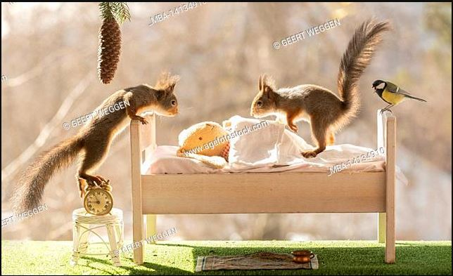
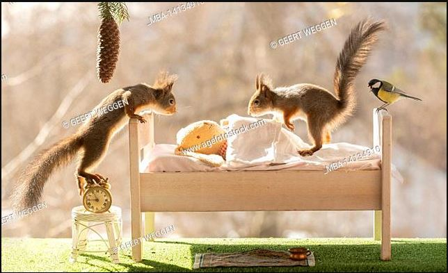

On a branch.

Huddled together inside their nest.

On the ground (nut-drunk).

On a bed attached to the tree (by us).
 First, we knew we couldn't keep track of the Bryant St. Squirrel Family 24/7. We decided to keep track of their favorite sleeping places for a week to create a list.
Here is the list of their favorite sleeping spots.
On a branch.
Huddled together inside their nest.
On the ground (nut-drunk).
On a bed attached to the tree (by us).
Next, we tracked how many times each member of the family slept on any of these spots for a month. Here are the results.
| Member | Branch | Nest | Ground | Bed |
|---|---|---|---|---|
| Chip | 5 | 7 | 3 | 21 |
| Momma | 17 | 20 | 0 | 1 |
| Ziggy | 37 | 0 | 0 | 20 |
| Chonks | 0 | 0 | 47 | 0 |
Our conclusions from the data above, lead us to believe that...
In summary, we spent A LOT of time looking at sleeping squirrels and it made our days way more entertaining! Dennis and I continue to capture photos of squirrels sleeping in the wild.